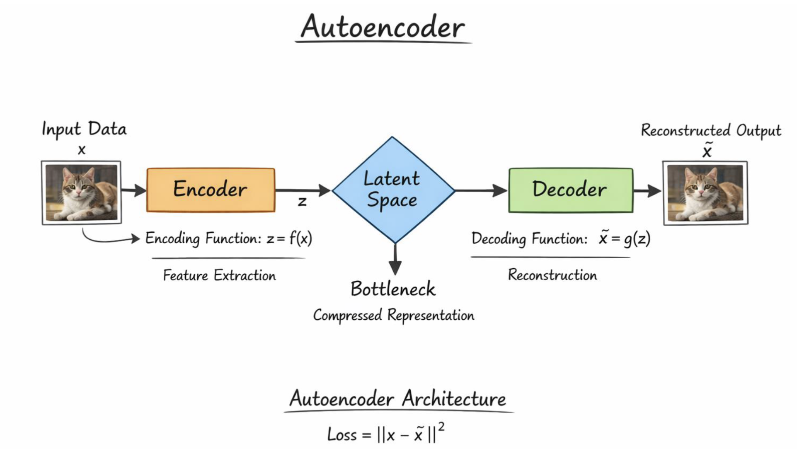
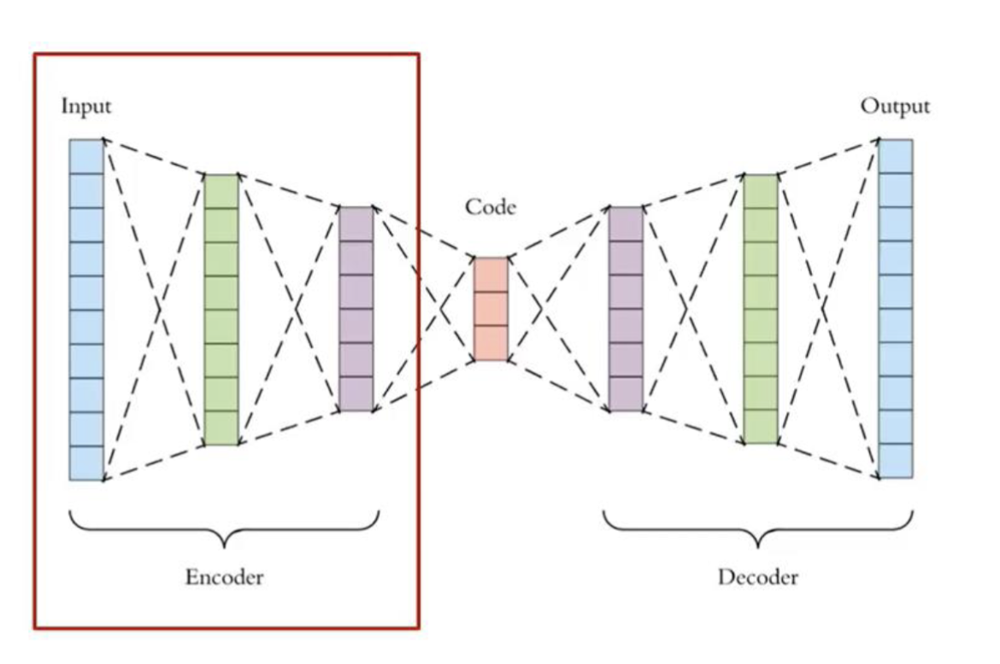
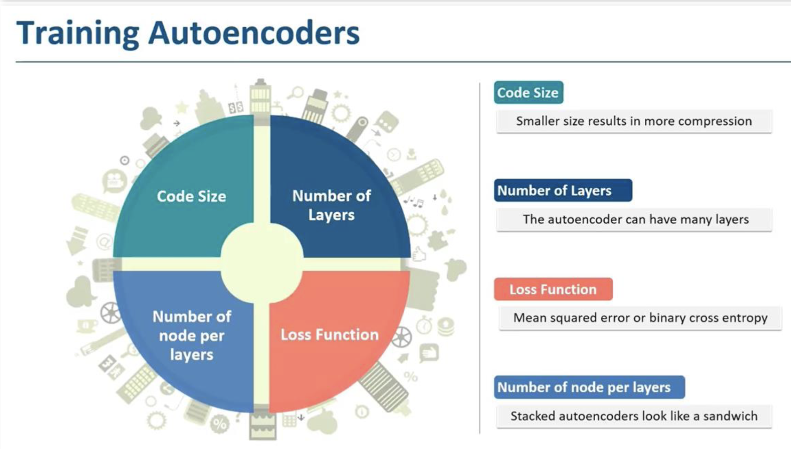
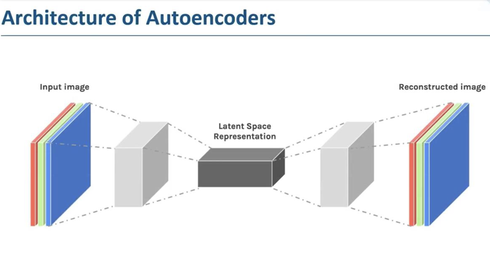
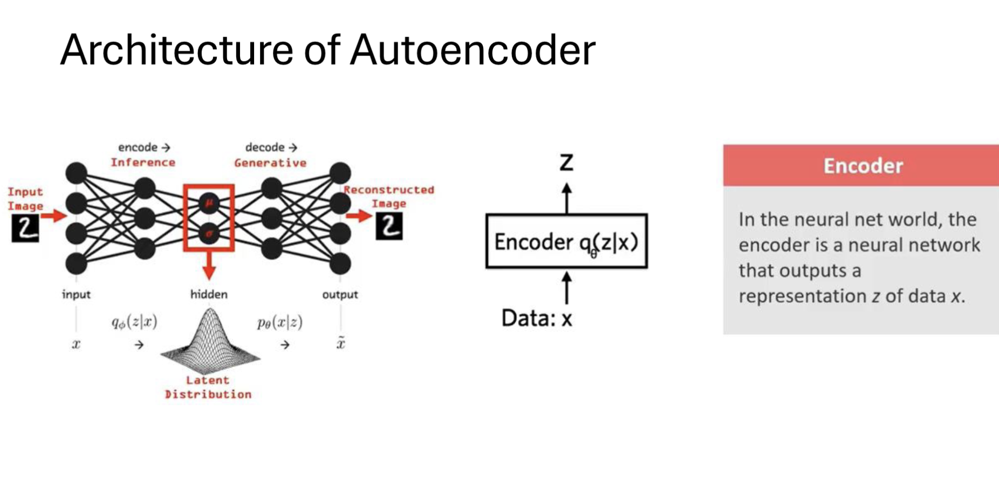
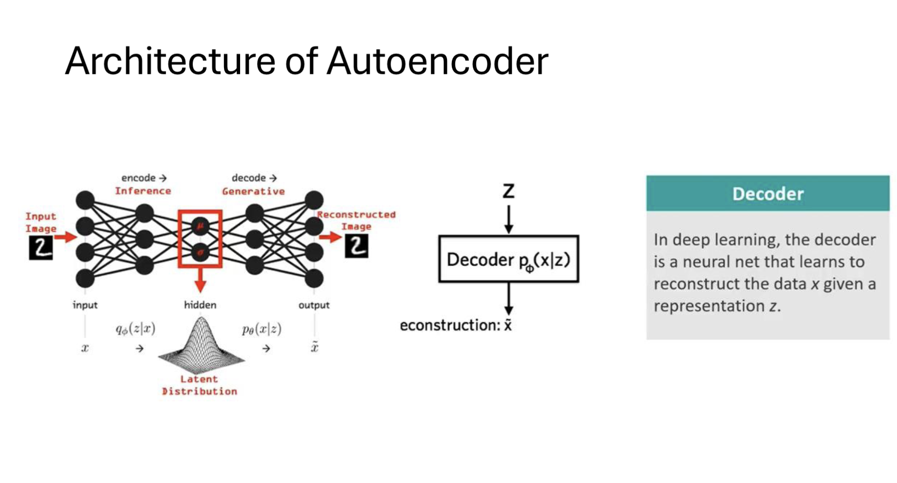
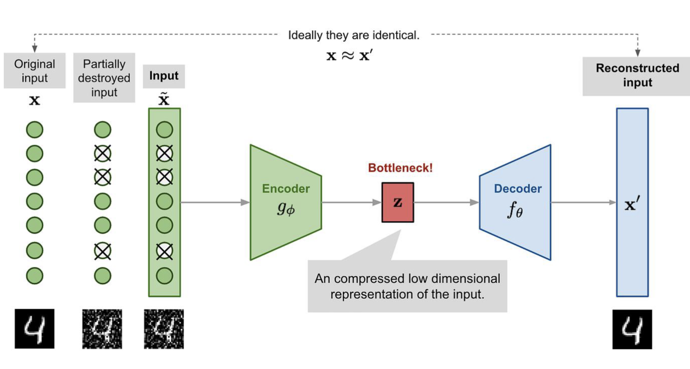
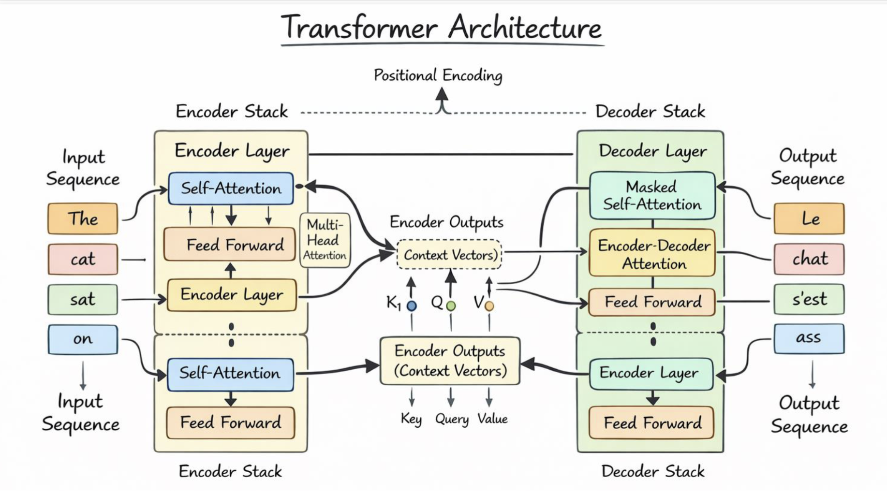
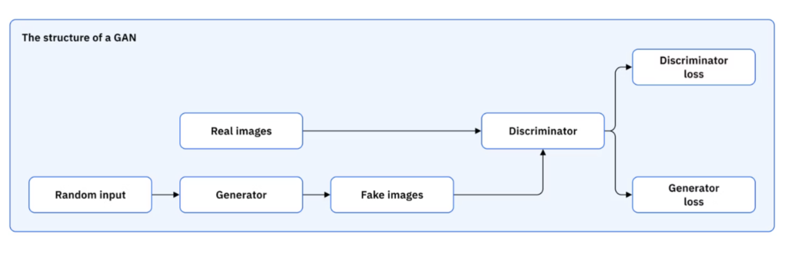

An autoencoder is a type of neural network architecture that is designed to learn efficient compressed representations of data, typically for the purpose of dimensionality reduction or feature learning. It consists of two main components: an encoder and a decoder.
It tries to reconstruct the input data from a compressed representation, which is often referred to as the "latent space" or "bottleneck". The encoder maps the input data to this latent space, while the decoder maps it back to the original input space. The goal of training an autoencoder is to minimize the difference between the input and the reconstructed output, often using a loss function such as mean squared error.

An Auto-Encoder neural network typically consists of three main layers:

Training an autoencoder follows the standard supervised learning loop — the only difference is that the target output is the input itself. The model learns by minimising the reconstruction error between the original input $x$ and the decoded output $\hat{x}$.

| Hyperparameter | Effect |
|---|---|
| Code Size | Size of the latent layer. Smaller → more compression, higher information loss risk |
| Number of Layers | Deeper encoders/decoders learn more abstract representations |
| Nodes per Layer | Symmetric "sandwich" structure — encoder narrows, decoder mirrors it back |
| Loss Function | MSE for continuous data; Binary Cross-Entropy for binary/image data |
$$\mathcal{L} = \frac{1}{n} \sum_{i=1}^{n} (x_i - \hat{x}_i)^2$$
$$\mathcal{L} = -\frac{1}{n} \sum_{i=1}^{n} \left[ x_i \log \hat{x}_i + (1 - x_i) \log(1 - \hat{x}_i) \right]$$
[!NOTE] Stacked autoencoders (deep autoencoders) are built by adding more hidden layers on each side of the bottleneck. The architecture mirrors itself — if the encoder has layers $[784 \to 256 \to 64]$, the decoder has $[64 \to 256 \to 784]$. This "sandwich" structure is what gives stacked autoencoders their name.



Regularized autoencoders are a class of autoencoders that incorporate additional constraints or penalties during training to encourage the model to learn more meaningful and robust representations. These regularization techniques help prevent overfitting and can lead to better generalization on unseen data.

The Loss Function is modified to include a regularization term: $$\mathcal{L} = |x - \hat{x}|^2 + \lambda R(h)$$
where $|x - \hat{x}|^2$ is the reconstruction loss, $R(h)$ is the regularization term applied to the latent representation $h$, and $\lambda$ is a hyperparameter that controls the strength of the regularization.
Some common types of regularized autoencoders include:
| Component | Description | Formula |
|---|---|---|
| (a) Input with Noise | Original data $x$ is corrupted | $\tilde{x} = x + \text{noise}$ |
| (b) Encoder | Maps noisy input → latent representation | $h = f(\tilde{x})$ |
| (c) Bottleneck | Learns compressed, noise-invariant features | — |
| (d) Decoder | Reconstructs clean data from latent code | $\hat{x} = g(h)$ |
| (e) Loss Function | Compare reconstruction with original clean input | $\mathcal{L} = |x - \hat{x}|^2$ |
| Step | Action |
|---|---|
| Step 1: Add Noise | Corrupt input $x \to \tilde{x}$ |
| Step 2: Encode | Extract features from noisy data |
| Step 3: Learn Representation | Model learns the underlying structure, not the noise |
| Step 4: Decode | Reconstruct clean data |
| Step 5: Compute Loss | Compare reconstruction with original $x$ |
| Step 6: Backpropagation | Optimise weights to reduce reconstruction error |

| Application | What it does | Used in |
|---|---|---|
| Image Denoising | Removes noise from corrupted images; learns underlying patterns | Medical imaging, satellite image processing |
| Dimensionality Reduction | Compresses high-dimensional data → low-dimensional representation; alternative to PCA | Data visualisation (2D/3D plots), preprocessing for ML models |
| Feature Extraction | Automatically learns important features from raw data | Image classification, text processing, speech recognition |
| Anomaly Detection | Trained on normal data — high reconstruction error signals an anomaly | Fraud detection, intrusion detection, fault detection in machines |
| Data Compression | Compresses data into compact latent form; reconstructs on demand | Image compression, signal compression |
| Medical Applications | Denoising MRI/CT scans, disease detection, patient data representation | Improves diagnosis accuracy and image clarity |
| Speech & Audio Processing | Noise reduction in audio signals; feature extraction for speech recognition | Voice assistants, speech enhancement systems |
| Image Generation & Reconstruction | Generates new data samples; fills missing parts of images | Variational Autoencoder (VAE) based applications |
| Recommendation Systems | Learns user-item interaction patterns for personalisation | Movie recommendations, e-commerce |
| Natural Language Processing | Sentence embedding and text representation | Chatbots, document clustering |
A GAN is a generative model made up of two neural networks competing against each other:
Random Noise z → [Generator G] → Fake data
↓
Real data ──────────────────────→ [Discriminator D] → Real / Fake?
They are trained together in an adversarial loop — the generator gets better at fooling, the discriminator gets better at detecting, and both improve over time.
$$V(D, G) = \mathbb{E}{x \sim P{\text{data}}(x)}[\log D(x)] + \mathbb{E}_{z \sim p_z(z)}[\log(1 - D(G(z)))]$$
| Symbol | Meaning |
|---|---|
| $G$ | Generator network |
| $D$ | Discriminator network |
| $x$ | A sample from real data |
| $z$ | A random noise sample fed into the generator |
| $P_{\text{data}}(x)$ | Distribution of real data |
| $p_z(z)$ | Distribution of the generator (noise) |
| $D(x)$ | Discriminator's output for real data (wants this → 1) |
| $G(z)$ | Generator's output (a fake sample) |
| $D(G(z))$ | Discriminator's output for fake data (Generator wants this → 1, Discriminator wants this → 0) |
In plain terms:
This is called a minimax game: $\min_G \max_D , V(D, G)$
| Application | Description |
|---|---|
| Prediction of Next Frame in a Video | Given a few frames (e.g., a pitcher mid-throw), the GAN generates the next frame — used in video prediction and synthesis |
| Text to Image Generation | Given a text prompt, the generator creates a realistic image matching the description |
| Image Super-Resolution | Upscale low-resolution images to high resolution (used in SRGAN) |
| Data Augmentation | Generate synthetic training samples to balance datasets |
| Face Generation / Style Transfer | Generate photorealistic faces (StyleGAN) or transfer artistic styles |
| Medical Image Synthesis | Generate MRI/CT scans for training diagnostic models |
| Image-to-Image Translation | CycleGAN: convert MRI → CT, or sketch → photo (Pix2Pix) |
Transformers abandon the sequential step-by-step approach entirely. Instead, they process the whole sequence at once using self-attention — letting every word directly attend to every other word, regardless of distance.
"The cat sat on the mat"
↕ ↕ ↕ ↕ ↕ ↕
[ Self-Attention across all positions ]

Self-attention assigns a weight to every word in the sequence relative to the current word being processed — so when encoding "sat", the model can directly look at "cat" (subject) and "mat" (location) without having to pass through intermediate hidden states.
This eliminates the vanishing gradient problem entirely and enables massive parallelism during training, which is why Transformers (GPT, BERT, etc.) now dominate NLP.
| Model | Handles long deps? | Parallel training? | Key idea |
|---|---|---|---|
| RNN | Poor | No | Hidden state loop |
| LSTM | Good | No | Gated cell memory |
| GRU | Good | No | Simplified gating |
| Transformer | Excellent | Yes | Self-attention |
Generative Adversarial Networks (GANs) are a class of machine learning frameworks designed for generative modeling. They consist of two neural networks, the generator and the discriminator, that are trained simultaneously through an adversarial process. The generator creates synthetic data samples, while the discriminator evaluates them against real data samples to determine their authenticity.
